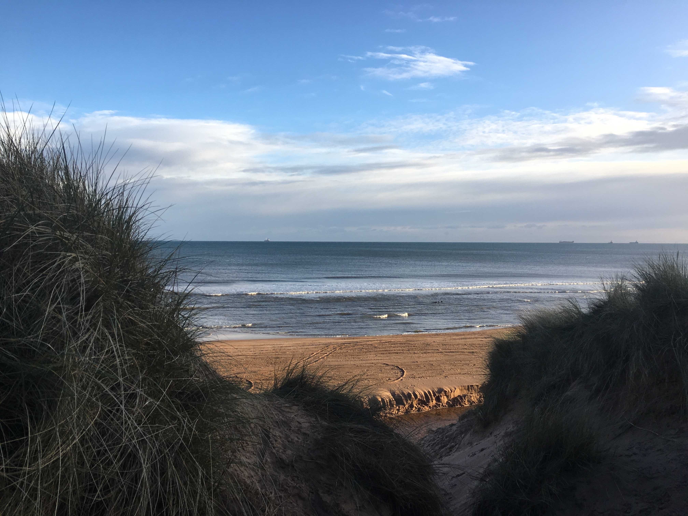

Remember to put <!doctype html> at the start of any html code.
To create a Globle link type <a href="link">name</a>
to link a local ink use img src="link" alt="name" /
THIS IS A TESTING PAGE AND IS NOT MENT FOR NORMAL USERS. if you are NOT authrorised to visit the page please leave and go to https://baston.uk
Welcome To My Webpage
I'm going to make somthing with this at some point

note to self: all of this stuff.
This code was getting smaller due to the syle.css file. The css document is governing how the Html code looks. It can change thing sutch as font, size, color and it can also add things sutch as the box sourounding the hyperlink to google. css
can also change things due to users action like how the google box changes color when a user holds there mouse cursor over the google box, however is is still limited in its resources and power witch is why things like java script and ruby are
added to improve the website design. The programs i use to edit code are ether Notepad++ or adobe Dreamweaver. Notepad++ is verry usefull as it starts almost instantly, its light weaght meaning in can be put on a pendrive also it uses verry
little resources. Adobie Dreamwever ia a verry powerfull tool that has loads of fetures.
This is a small weabsite that informes users how to use images and links useing them